01 / このゲームは？
1枚ずつ出す。
全員で任務を果たす。
全員が手札から1枚ずつカードを出す。この1周を「トリック」と呼びます。ただし、たくさん勝つゲームではありません。
全員が1枚ずつ出す→1トリック→指定された人が取る
ミッションごとに「誰が、どのカードを取るか」というタスクがあります。全員のタスクを達成できれば成功です。
02 / カードの構成
4色の通常カードと、
ロケット。
通常カードは4色・各1〜9。ロケットは1〜4で、通常色より強い切り札です。
03 / 最初に覚えるルール
同じ色を持っていたら、
必ず同じ色を出す。
最初にピンク3が出たら、ピンクを持つ人はピンクを出します。同じ色なら数字は自由。大きい数字を出す義務はありません。
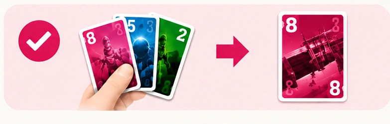
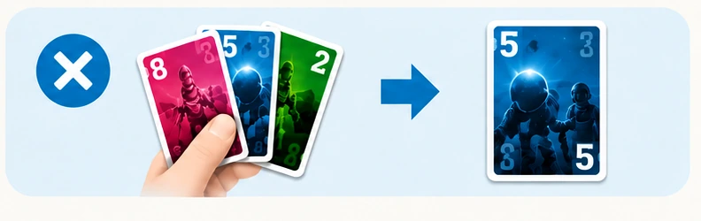
最重要 色が先。数字の強さは、そのあと。
04 / 1トリックの勝者
最初の色の中で、
最大の数字が勝つ。
- 01最初の人が出す
このカードの色が、そのトリックで従う色。
- 02同じ色で続ける
持っていなければ、別の色かロケットを出せる。
- 03勝者がカードを取る
その人が、次のトリックの最初の1枚を出す。
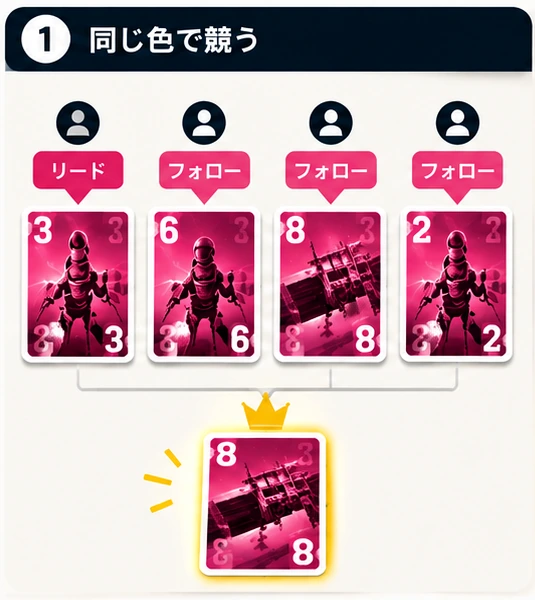
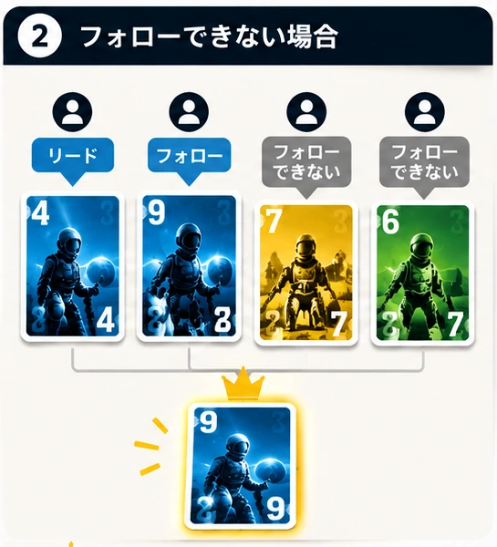
色が先。
数字は二番目。
05 / 切り札
ロケットは、
通常色より強い。
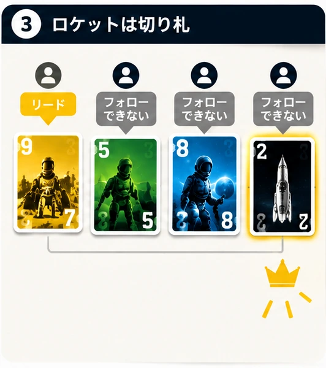
ただし、自由には出せない。
最初に出た通常色を持っているなら、その色を出す必要があります。ロケットを持っていても、フォローのルールを無視できません。
06 / 勝負と任務は違う
トリックに勝つ≠ミッションに勝つ
自分が勝てる場面でも、タスクのカードを別の人に取らせる必要があります。勝てるから、勝てばいいわけではありません。
07 / ミッションとタスク
指定された人が、
指定カードを取る。
タスクカードは「誰が、どのカードを含むトリックを取るか」を示します。指定された人が取れば達成。別の人が取ると、その時点で失敗です。
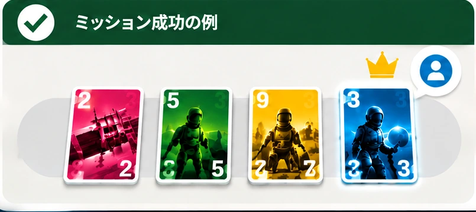
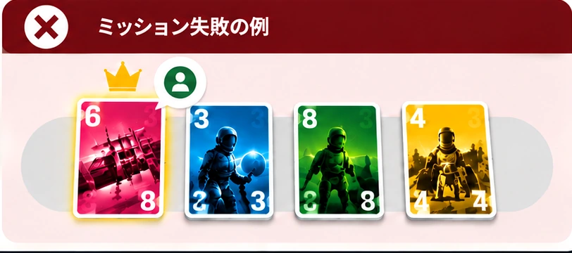
取り返せない 一度ほかの人が指定カードを取ると、後から修正できない。
08 / 司令官
ロケット4を持つ人が、
司令官。
4
- 最初にタスクを選ぶ
- 最初のトリックを始める
タスクが複数なら、司令官から時計回りに1枚ずつ選び、すべてなくなるまで繰り返します。1人が複数のタスクを持つこともあります。
09 / 通信
言葉の代わりに、
1枚だけ公開する。
自分の手札の内容を自由に話してはいけません。代わりに、原則として1人につき1ミッションで1回、通常カード1枚を公開して情報を伝えられます。
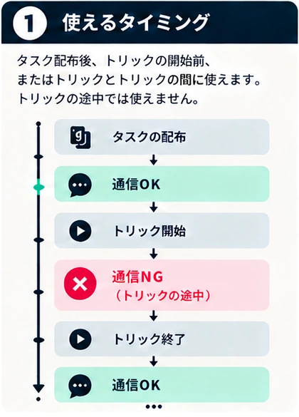
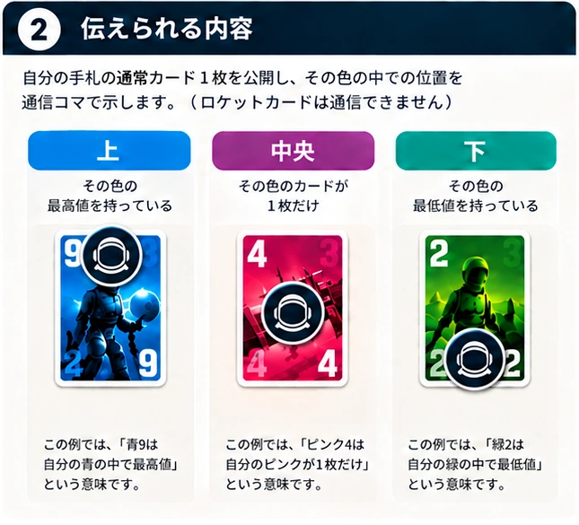
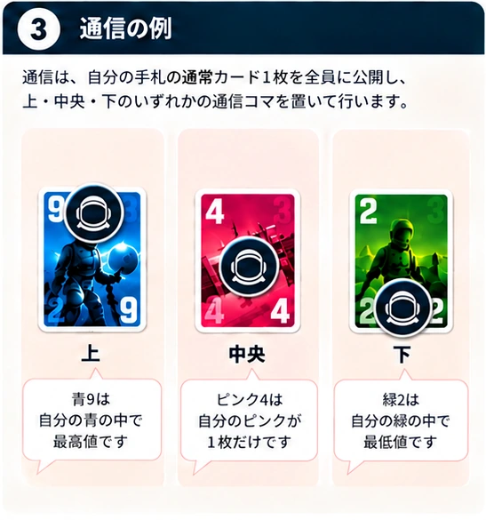
ロケットは通信できない。
公開したカードは手札の一部。後で普通に出せる。
通信後に状況が変わっても、コマは動かさない。
通信したらリマインダーカードを手札へ。公開カードを出したら、そのリマインダーカードを除く。
通信は記録 「今の手札」ではなく、「通信した瞬間の情報」です。
10 / 成功と失敗
全員で成功する。
全員で失敗する。
すべて満たせば完了。
指定カードを別の人が取った
タスク順を守れなくなった
固有条件を満たせなくなった
失敗しても、同じミッションへ再挑戦できます。カードを混ぜ直し、配り直して始めます。
11 / 後のミッションで増えるルール
最初は読まなくて大丈夫。
必要になったら開く。
01タスクを達成する順番
1・2・3・4・5はトリックの回数ではありません。未達成のタスクの中で「最初」「次」「その次」に達成する順番です。Ωは最後。矢印の記号は「このタスクより前／後」という相対的な順番を示します。
順番を守れなくなった時点で、ミッション失敗です。
02救難信号
カードとタスクを配り終え、まだ誰も通信していない時に、チームで使うか決めます。使うなら全員が手札から1枚ずつ、全員同じ方向へ渡します。
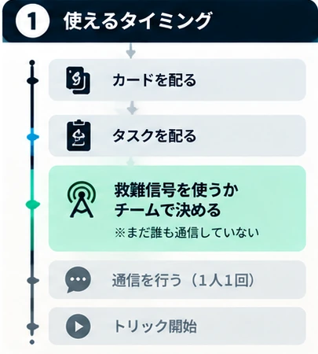
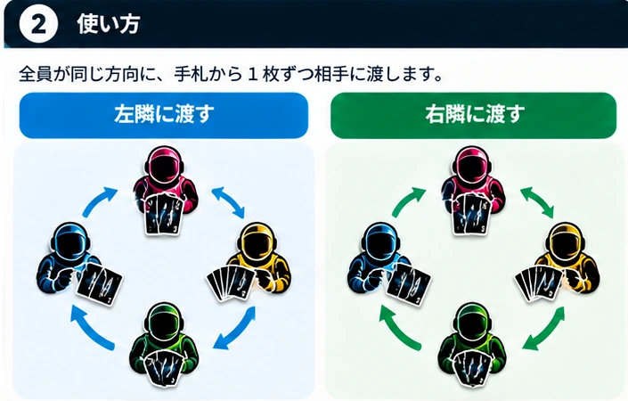
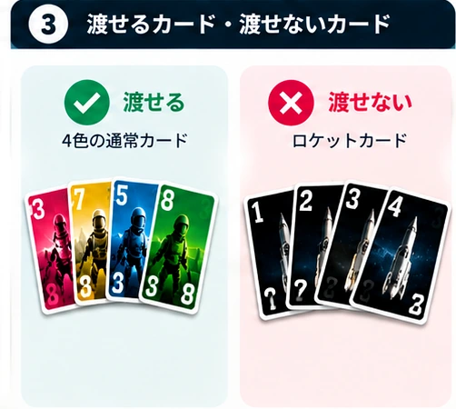
一部の人だけ渡す、方向をばらばらにする、ロケットを渡す——いずれもできません。
12 / 1ミッションの流れ
準備して、伝えて、
正しい人へつなぐ。
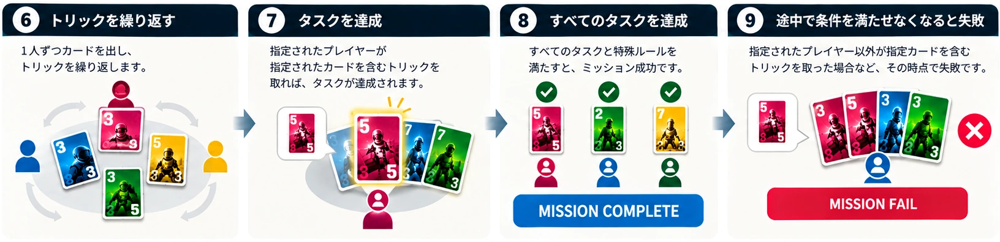
- ミッションと固有条件を確認
- 40枚のカードを配る
- ロケット4を持つ司令官を確認
- 司令官からタスクを分配
- 必要なら通信
- 1人1枚のトリックを繰り返す
- 指定された人がタスクカードを取る
- すべて達成したら成功
3人で遊ぶ時：1人だけ手札が1枚多くなります。最後のトリック後、その1枚は使わずに残ります。
13 / プレイ中の早見表
迷ったら、
ここだけ見る。
- 01最初の人がカードを1枚出す
- 02同じ色を持っていたら、必ず同じ色
- 03同色がなければ、別色かロケット
- 04通常は最初の色の最大値が勝つ
- 05ロケットは切り札。複数なら最大値
- 06勝者が次のトリックを始める
- 07タスクカードは指定された人に取らせる
- 08通信は原則1人1回。トリックの途中は不可
忘れやすいこと
高い数字を出す必要はない／別色の大きな数字は通常勝てない／ロケットもフォローを無視できない／勝てばいいゲームではない／ロケットは通信できない。